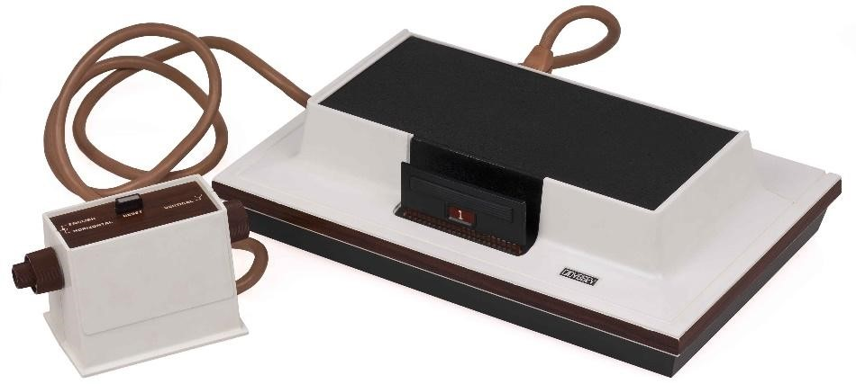
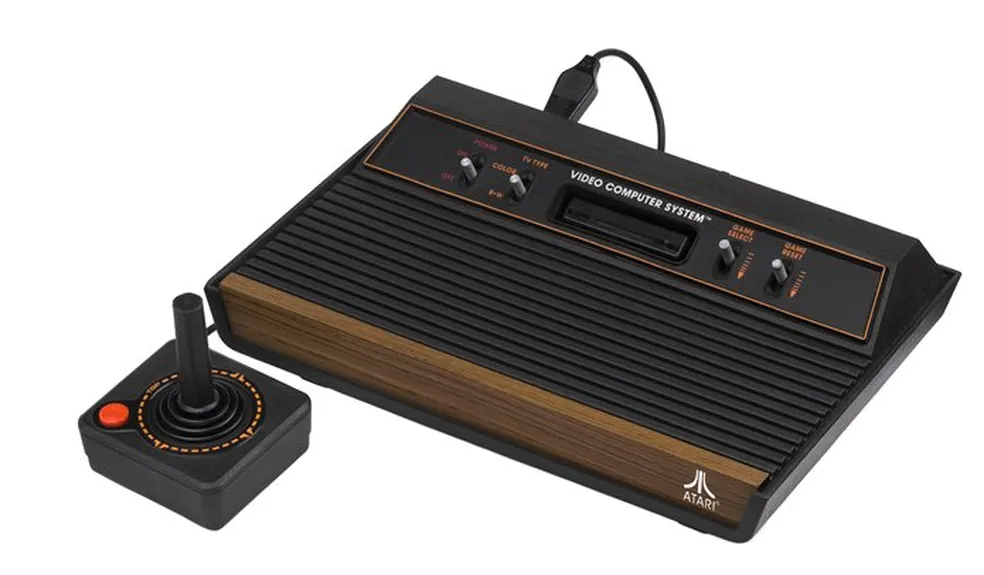
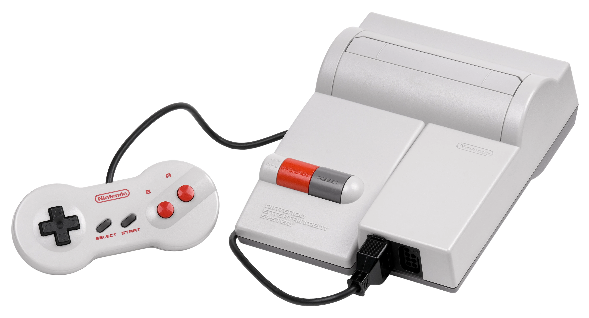

Anos 1970 – A Origem
A década de 1970 marcou o nascimento dos videogames comerciais. O Pong (1972), criado pela Atari, foi um dos primeiros sucessos de arcade. Em casa, o Magnavox Odyssey (1972) se tornou o primeiro console doméstico, com jogos simples e gráficos primitivos. Ainda assim, ele abriu as portas para uma nova forma de lazer eletrônico. Em cada imagem, você verá os consoles mais vendidos de cada época.
Anos 1980 – A Era dos Arcades
Nos anos 80, os arcades dominaram o entretenimento juvenil com clássicos como Pac-Man, Donkey Kong e Space Invaders. Em casa, o Atari 2600 se popularizou, trazendo jogos como Pitfall! e Adventure. Porém, em 1983, ocorreu o crash da indústria nos EUA, causado por a saturação do mercado e jogos de baixa qualidade.
A salvação veio com a chegada da Nintendo Entertainment System (NES) em 1985. A empresa japonesa revolucionou os games com títulos como Super Mario Bros., The Legend of Zelda e Metroid, resgatando a confiança do público.
Anos 1990 – Os 16 Bits e o 3D
A disputa entre Sega Genesis e Super Nintendo (SNES) marcou os anos 90 com uma guerra de mascotes (Sonic vs Mario) e avanços técnicos em gráficos e som. No fim da década, o 3D chegou com força: Sony PlayStation (1994) e Nintendo 64 (1996) apresentaram mundos tridimensionais em jogos como Final Fantasy VII, Metal Gear Solid, The Legend of Zelda: Ocarina of Time e Super Mario 64.

Com a chegada do Milênio, a industria de jogos alcançou um salto enorme em todos os aspectos, e você conseguirar vem cada um dos grandes consoles que marcaram uma geração acessando o próximo catálogo no nosso menu!